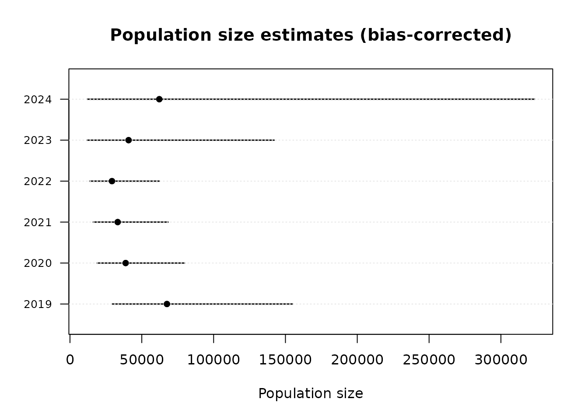
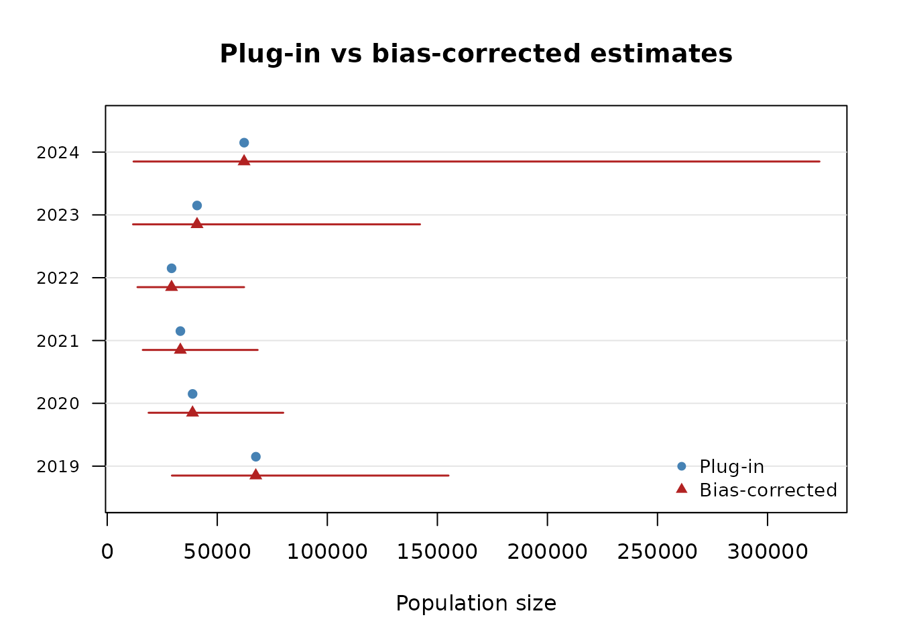
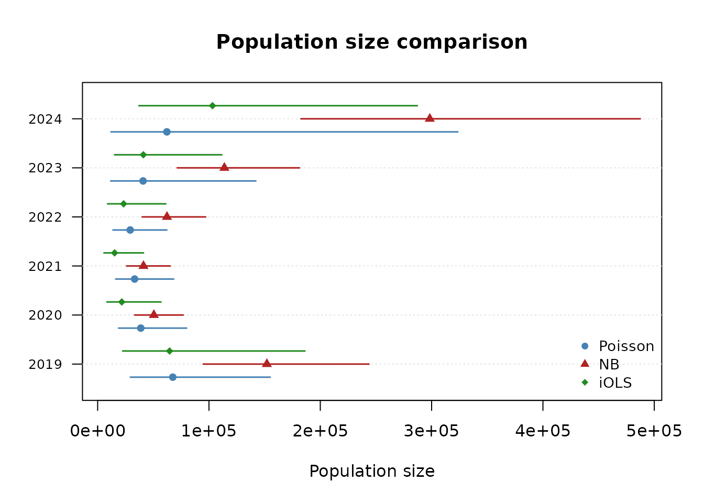

Introduction
This vignette demonstrates how to compare estimation methods and present results using the uncounted package’s plotting and reporting tools.
Fitting multiple models
The package supports five estimation methods. We fit Poisson, NB, and iOLS to the same data for comparison:
fit_po <- estimate_hidden_pop(d, ~ m, ~ n, ~ N,
method = "poisson", cov_alpha = ~ year + sex,
gamma = "estimate", countries = ~ country_code)
fit_nb <- estimate_hidden_pop(d, ~ m, ~ n, ~ N,
method = "nb", cov_alpha = ~ year + sex,
gamma = fit_po$gamma, countries = ~ country_code)
fit_io <- estimate_hidden_pop(d, ~ m, ~ n, ~ N,
method = "iols", cov_alpha = ~ year + sex,
gamma = fit_po$gamma, countries = ~ country_code)Coefficient tables with modelsummary
The package provides tidy() and glance()
methods compatible with the modelsummary package:
library(modelsummary)
modelsummary(
list(Poisson = fit_po, NB = fit_nb, iOLS = fit_io),
stars = TRUE
)| Poisson | NB | iOLS | |
|---|---|---|---|
| + p < 0.1, * p < 0.05, ** p < 0.01, *** p < 0.001 | |||
| alpha × (Intercept) | 0.772*** | 0.867*** | 0.764*** |
| (0.050) | (0.026) | (0.065) | |
| alpha × year2020 | -0.062** | -0.112*** | -0.116*** |
| (0.022) | (0.016) | (0.024) | |
| alpha × year2021 | -0.093*** | -0.148*** | -0.169*** |
| (0.023) | (0.019) | (0.026) | |
| alpha × year2022 | -0.122*** | -0.127*** | -0.141*** |
| (0.025) | (0.018) | (0.028) | |
| alpha × year2023 | -0.097* | -0.077*** | -0.092*** |
| (0.046) | (0.016) | (0.021) | |
| alpha × year2024 | -0.060 | 0.008 | -0.008 |
| (0.058) | (0.016) | (0.020) | |
| alpha × sexMale | 0.042 | 0.017 | 0.049* |
| (0.038) | (0.012) | (0.023) | |
| beta | 0.613*** | 0.783*** | 0.638*** |
| (0.122) | (0.032) | (0.071) | |
| Num.Obs. | 1382 | 1382 | 1382 |
| AIC | 17569.0 | 5303.9 | 925616.0 |
| BIC | 17616.1 | 5351.0 | 925657.9 |
| Log.Lik. | -8775.519 | -2642.969 | -462800.005 |
| method | POISSON | NB | IOLS |
| gamma | 0.00608424077871728 | 0.00608424077871728 | 0.00608424077871728 |
| theta | 1.27644193464305 | ||
Individual coefficient tables:
tidy(fit_po, conf.int = TRUE)
#> term estimate std.error statistic p.value conf.low
#> 1 alpha:(Intercept) 0.77178226 0.05038723 15.317021 5.885383e-53 0.67302510
#> 2 alpha:year2020 -0.06192406 0.02186837 -2.831672 4.630528e-03 -0.10478529
#> 3 alpha:year2021 -0.09301570 0.02299452 -4.045125 5.229522e-05 -0.13808413
#> 4 alpha:year2022 -0.12230316 0.02471916 -4.947707 7.509276e-07 -0.17075183
#> 5 alpha:year2023 -0.09657813 0.04587434 -2.105276 3.526732e-02 -0.18649018
#> 6 alpha:year2024 -0.05981455 0.05793392 -1.032462 3.018559e-01 -0.17336295
#> 7 alpha:sexMale 0.04179193 0.03766337 1.109617 2.671640e-01 -0.03202692
#> 8 beta 0.61326701 0.12228095 5.015229 5.297028e-07 0.37360074
#> conf.high
#> 1 0.870539417
#> 2 -0.019062842
#> 3 -0.047947274
#> 4 -0.073854502
#> 5 -0.006666076
#> 6 0.053733850
#> 7 0.115610781
#> 8 0.852933273
glance(fit_po)
#> method nobs logLik AIC BIC deviance df.residual gamma
#> 1 POISSON 1382 -8775.519 17569.04 17616.12 14948.24 1373 0.006084241
#> theta
#> 1 NAPlotting population size estimates
The popsize() function returns an object that can be
plotted directly:

# Compare plug-in vs bias-corrected
plot(ps, type = "compare")
Comparing models visually
compare_popsize() produces side-by-side population size
estimates:
comp <- compare_popsize(fit_po, fit_nb, fit_io,
labels = c("Poisson", "NB", "iOLS"),
by = ~ year)
print(comp)
#> Population size comparison: Poisson vs NB vs iOLS
#>
#> model group estimate estimate_bc lower upper
#> 1 Poisson 2019 67536.82 67504.27 29387.546 155059.79
#> 2 Poisson 2020 38787.40 38766.50 18790.590 79978.42
#> 3 Poisson 2021 33243.00 33224.94 16150.795 68349.37
#> 4 Poisson 2022 29249.60 29233.11 13739.448 62198.62
#> 5 Poisson 2023 40825.91 40804.83 11715.865 142117.87
#> 6 Poisson 2024 62218.64 62188.79 11951.532 323594.11
#> 7 NB 2019 156232.35 152016.52 94807.742 243746.15
#> 8 NB 2020 51813.98 50505.28 33151.814 76942.50
#> 9 NB 2021 42132.32 41172.70 25999.200 65201.68
#> 10 NB 2022 63811.34 62276.24 39962.897 97048.26
#> 11 NB 2023 116535.48 113818.23 71444.427 181324.01
#> 12 NB 2024 305601.41 298352.95 182612.493 487450.12
#> 13 iOLS 2019 65745.61 64612.47 22417.079 186231.71
#> 14 iOLS 2020 21998.77 21671.80 8247.431 56947.07
#> 15 iOLS 2021 15444.43 15246.53 5642.190 41199.70
#> 16 iOLS 2022 23655.47 23334.47 8887.969 61262.29
#> 17 iOLS 2023 41622.38 41061.37 15118.863 111518.71
#> 18 iOLS 2024 104625.29 103172.13 37066.203 287175.02
plot(comp)
Predictions
The predict() method supports new data:
# Fitted values
head(predict(fit_po))
#> [1] 3.2837236 0.3538452 2.3653570 2.2142436 21.0701286 0.8119224
# Log-scale (linear predictor)
head(predict(fit_po, type = "link"))
#> [1] 1.1889780 -1.0388959 0.8609290 0.7949109 3.0478563 -0.2083506
# Predictions for new data
new_d <- d[1:10, ]
predict(fit_po, newdata = new_d)
#> [1] 3.2837236 0.3538452 2.3653570 2.2142436 21.0701286 0.8119224
#> [7] 3.9496910 2.1480207 0.4921350 84.9170396Model selection guidance
| Situation | Recommended method |
|---|---|
| Default analysis | Poisson (robust, well-studied) |
| Overdispersion suspected | NB, then LR test vs Poisson |
| Sensitivity to large countries | iOLS alongside Poisson |
| Quick exploration | OLS with fixed gamma |
When Poisson and iOLS agree, the result is robust to the choice of weighting. When they diverge, report both and discuss which observations drive the difference.
References
- Santos Silva, J. M. C. & Tenreyro, S. (2006). The Log of Gravity. Review of Economics and Statistics, 88(4), 641–658.
- Benatia, D., Bellego, C. & Pape, L.-D. (2024). Dealing with Logs and Zeros in Regression Models. arXiv:2203.11820v3.
- Zhang, L.-C. (2008). Developing methods for determining the number of unauthorized foreigners in Norway (Documents 2008/11). Statistics Norway.
- Beresewicz, M. & Pawlukiewicz, K. (2020). Estimation of the number of irregular foreigners in Poland using non-linear count regression models. arXiv:2008.09407.